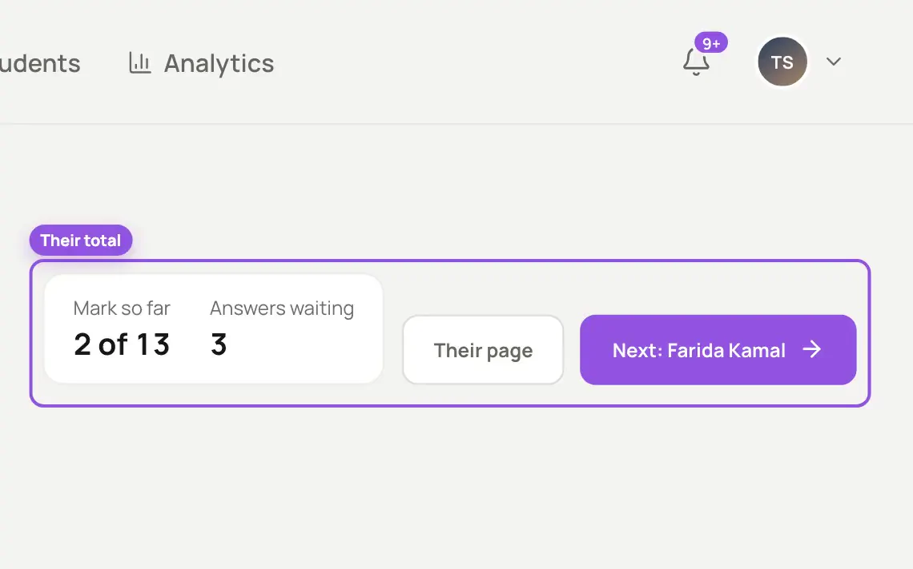

Marked against your scheme
Each question part is marked against the mark scheme you upload, with what earns the marks shown beside the answer. You can check an answer in seconds.
About quizzes and homework
Scan your students' written papers and upload them with your mark scheme. Answers come back marked, with feedback for each student, and nothing goes out until you send it.
Every answer is marked question by question against the scheme you upload, with what earns the marks beside it. You check each paper, change any mark you disagree with, and send the results.

Your mark scheme decides every mark, and you decide when results go out.
Each question part is marked against the mark scheme you upload, with what earns the marks shown beside the answer. You can check an answer in seconds.
About quizzes and homeworkEach paper shows the student's mark so far and the answers still waiting. One button takes you to the next student.
About the course builder
Change any mark, with a reason, before results go out. Your students then find their marks for every question part under Exam results, with their marked paper.
What your students see

Review of Educational Research, 2007
Feedback is one of the strongest influences on learning, and it works best when learners can see how they did against a clear goal.
Hattie & Timperley (2007). The power of feedback. Review of Educational Research, 77(1), 81–112. doi.org/10.3102/003465430298487
How Klaro uses researchIn Klaro: each answer is marked against your own mark scheme, and students see their marks question by question.


Your lectures, your book and real past papers, linked to each other. Nothing in your course is made up.
Students learn from your recordings, in the order you set.
Every question comes from a real exam paper, and says which.
The Klaro team checks every course before your students see it.
Change any mark before a result reaches a student.
The question paper, your mark scheme, the total marks and each student's scanned paper as one PDF. Klaro matches each file to the student it's named after.
Yes. Change any mark and note the reason. Nothing reaches a student until you send it: one result at a time, or every result that's ready at once.
A notification in Klaro, then their marks for every question part under Exam results, with feedback. They can download their marked paper.